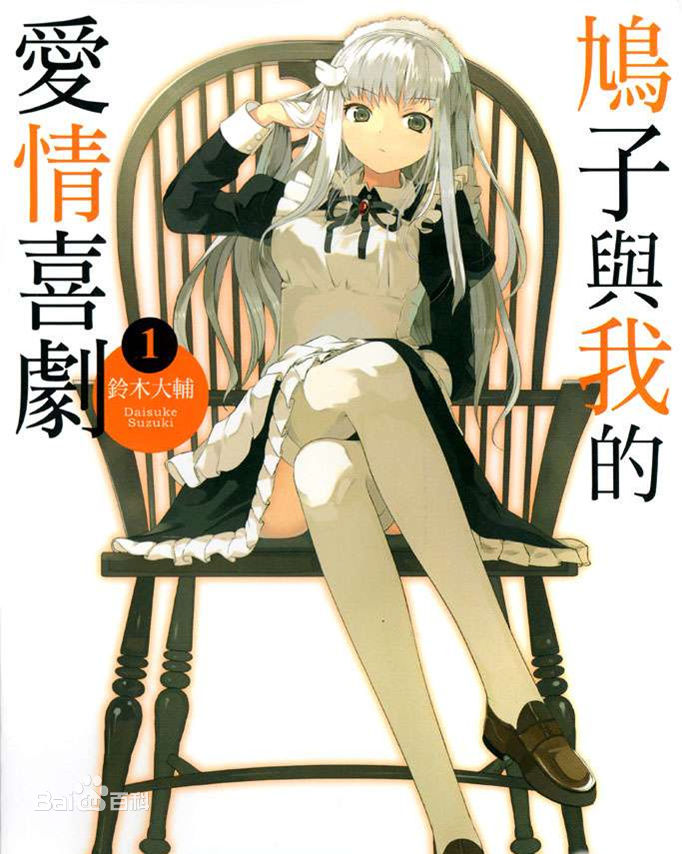
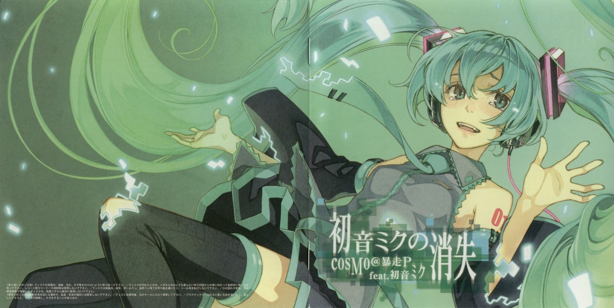

新鲜汉化好的幻想生物图鉴，而且还是c93的哦 继续阅读
[角虫国国都汉化](C93)[SHRINE (人丸)] 幻想生物図鑑 18(獣蜂)
22
新鲜汉化好的幻想生物图鉴，而且还是c93的哦 继续阅读
[角虫国国都汉化]最新汉化作品哦，种子刚做，速度慢是正常情况
就是这样，祝各位看得开心 继续阅读

哈哈哈哈，老子放假了，最近轻小说有点凉凉，所以来给点供血；如果有来生我不会选择美术生，毕竟比别人少天假，连出去找小姐姐的时间都挤没了。
这次推荐的是铃木大辅的《鸠子与我的爱情喜剧》，先提示下，鸠子只有妹妹光环，没有妹妹属性，所以想看妹控文的就等我过段日子发吧。
继续阅读
id=31195156
更一手凉宫春日的小说，标题里说是11册实际是10册，惊愕前后篇和在一起了，早年还是挺喜欢凉宫春日的，如果没有无尽的八月的话就更喜欢了_(:з」∠)_，早年还做过凉宫春日的CD合集，不过CD数量太多结果没搞定真是遗憾
顺便问下你们谁手里有FAN BOOK系列,有的话欢迎发我邮箱
目前缺少:
凉宫春日的约定/涼宮ハルヒの約束 公式ファンブック
凉宫春日的困惑/涼宮ハルヒの戸惑 公式ファンブック
凉宫春日的并列·直列/涼宮ハルヒの並列・直列 公式ファンブック
小凉宫春日&小鹤屋学姐的公式/涼宮ハルヒちゃん＆ちゅるやさんのこうしき
凉宫春日的消失/公式ガイドブック 涼宮ハルヒの消失
凉宫春日的追忆/涼宮ハルヒの追想 公式ファンブック
Fever 凉宫春日的忧郁～Haruhi On Stage!!!/涼宮ハルヒの憂鬱 ~Haruhi On Stage!!! 继续阅读
烟花的轻小说版本可真多，不过要说正统的话还是得以剧场版动画的剧本为准
当年的真人电影只有短短的49分钟，改编成剧场版的话其中所需要的改动也肯定是必要的，这在小说的后记里也有提到，而且作者是跨行写小说，内容中有脚本的味道也是可以理解的，不过我唯一看不懂的就是在小说的后记里所提到的是根据电视剧改版的，而我所能查到的却是真人电影
继续阅读
又一部人丸的作品汉化了，汉化组还是很给力的（这次我没有沉迷任何东西）
继续阅读
新人请多关照 好久没来看看发现神社多了一个轻小说的版块 其实本人就是因为轻小说入的宅 所以我也发起了兴趣投个稿 （只是因为只有这方面的资源比较全）
新人投稿好多东西不熟悉 怎么插入图片不熟悉 求dalao们帮帮忙 继续阅读
ID=40246102
恶之娘这首歌大家肯定很熟悉，然后这系列歌曲也是有小说滴，我耗费了点时间找齐了4作，顺手把蓝之序曲做成了EPUB格式，放心不是吐槽版，是正常的翻译版
衍生漫画也是有的，在动漫之家搜《悪ノ召使》就能看到，我这里就不放了
继续阅读

当年知道出小说时候的震惊和激动，现在依旧记忆犹新，当时我也是第一时间买了小说，不过好像买的是盗版，内容都接不上，体验贼差，好在后来又买了一本对的
时隔这么久现在才又想起来这部作品，那就重新再读一次
继续阅读